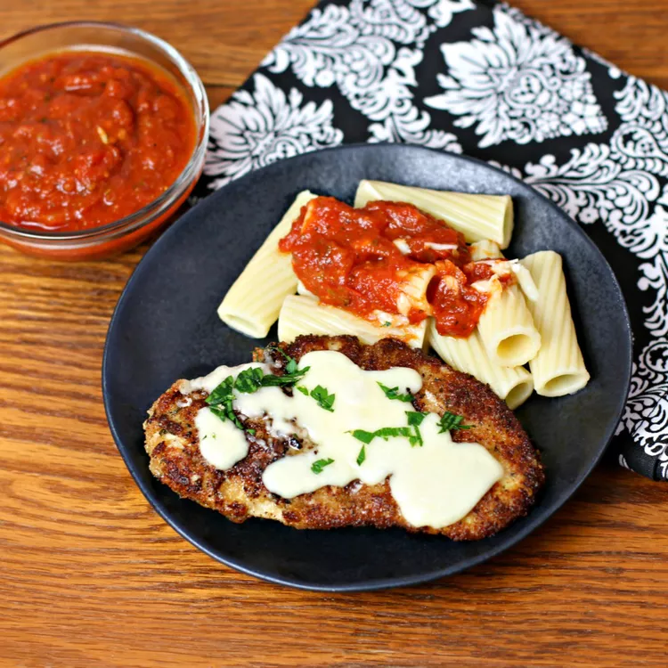

Chicken Parm

Juice and crispy chicken parmesan served with a side of rigatoni.
This easy recipe for chicken Parm boasts juicy, tender chicken with a crispy Parmesan crust, a zesty homemade marinara sauce, and a golden layer of gooey melted cheese. Served over rigatoni pasta.
Ingredients:
Marinara Sauce:
- 3 tablespoons extra-virgin olive oil
- 1/2 medium onion, finely chopped
- 4 cloves garlic, minced
- 1 (14 ounce) can italian crushed tomatoes with basil
- 1/2 cup chicken broth
- 2 tablespoons red wine
- 1/2 teaspoon garlic powder
- 1/2 teaspoon onion powder
- 1/2 teaspoon dried oregano
- 1/2 teaspoon italian seasoning
- 1 pinch crushed red pepper flakes
- 1 pinch white sugar
- salt and ground black pepper to taste
Pasta:
- 1 (16 ounce) box rigatoni
Chicken:
- 1 cup all-purpose flour
- 1 teaspoon garlic powder, divided
- 1/2 teaspoon salt, divided
- 1/4 teaspoon ground black pepper
- 2 large eggs
- 3 tablespoons milk
- 1 cup italian-seasoned bread crumbs
- 1/4 cup grated Parmesan cheese
- 1 teaspoon dried oregano
- 1 teaspoon italian seasoning
- 1/2 teaspoon garlic powder
- 1/4 teaspoon salt
- 4 boneless, skinless chicken breasts
- 2 cups canola oil for frying, or as needed
- 3/4 cup shredded mozzerella cheese
- 1/4 cup grated Parmesan cheese
For Finishing:
- 3 tablespoons chopped fresh basil leaves
Directions:
- Make the sauce: Heat oil in a large skillet over medium heat. Add onion and garlic; cook and stir until fragrant, about 2 minutes. Add crushed tomatoes, chicken broth, wine, garlic powder, onion powder, oregano, Italian seasoning, red pepper flakes, and sugar; season with salt and pepper. Stir to combine, reduce the heat to low, and simmer, stirring occasionally, until sauce thickens, about 15 minutes. Keep warm until needed.
- While the sauce is cooking, bring a large pot of lightly salted water to a boil. Add rigatoni and cook, stirring occasionally, until tender yet firm to the bite, about 13 minutes. Drain and keep warm.
- At the same time, start the chicken: Preheat the oven to 450 degrees F (230 degrees C). Line a rimmed baking sheet with parchment paper.
- Set out three large mixing bowls for breading chicken. Combine flour, 1/2 teaspoon garlic powder, 1/4 teaspoon salt, and pepper in the first bowl. Whisk together eggs and milk in the second bowl. Combine bread crumbs, Parmesan cheese, oregano, Italian seasoning, 1/2 teaspoon garlic powder, and 1/4 teaspoon salt in the third bowl.
- Place chicken breasts in a resealable plastic bag and flatten with a meat mallet to a thickness of 1/4 inch. Dredge a chicken breast in flour mixture and shake off excess. Dip into egg mixture, then coat with bread crumb mixture. Place onto a plate. Repeat to bread remaining chicken.
- Fill a large, cast iron skillet with 1 inch oil; heat over medium-high heat until oil is hot but not smoking. Add breaded chicken in batches; cook until golden brown, 1 to 2 minutes per side. Transfer chicken to the prepared baking sheet. Sprinkle mozzarella and Parmesan over chicken.
- Bake in the preheated oven until chicken reaches an internal temperature of 165 degrees F (74 degrees C) and the cheeses have melted, about 5 minutes.
- Plate pasta portions. Stir basil into sauce and ladle over pasta. Top each portion with chicken.